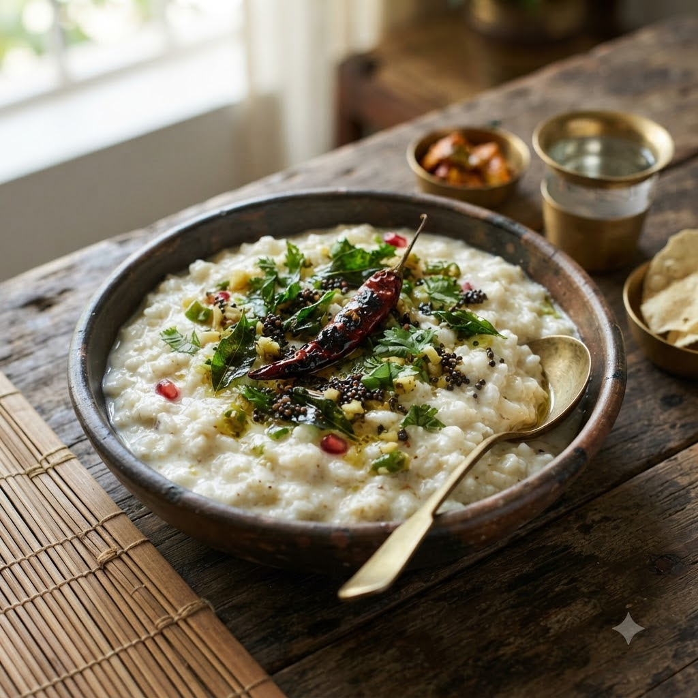

Curd Rice (Thayir Sadam)

Curd Rice (Thayir Sadam)
Chef Magic – Boil then Mix Auto 15 min + cooling — Serves 4
Gluten-Free • Gut-Friendly • Probiotic • Vegetarian • Everyday
Prep ahead: Cook rice a little softer than usual — curd rice works best with slightly mushy rice.
Ingredients
- 1 cup rice
- 2.5 cups water
- 1.5 cups fresh curd (yogurt)
- 1/2 cup milk
- 1 tsp mustard seeds (rai)
- 1 dried red chilli (lal mirch)
- 9 curry leaves (kadi patta)
- 1 tsp oil
- Salt to taste
- Grated ginger (adrak) or pomegranate, to garnish (optional)
Method
1Add rice and water to the jar; select Boil (Speed 1–2, 100°C) and cook until soft and fully done.
2Let the rice cool to room temperature, then mash lightly and mix in curd, milk and salt.
3Make a quick tempering with oil, mustard seeds, dried chilli and curry leaves and stir it in.
4Chill before serving; garnish with ginger or pomegranate if using.
Tip: Never mix curd into hot rice — it can split and turn watery. Always cool the rice first.